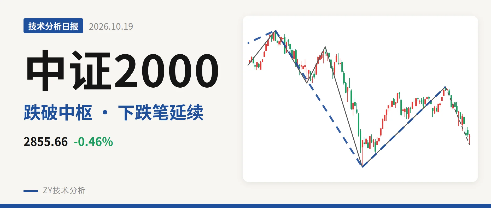
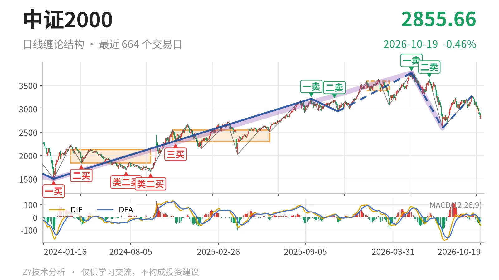

中证2000｜失守3381下沿，回看2585类二买

最近日线中枢 3381.36—3593.19点，收盘位于中枢之下
一句话：日线仍处5月14日以来下跌线段，3381下沿失守，短线受压。
📉 走势结构：日线下跌线段仍在延续
当前仍处在5月14日以来的日线下跌线段里。该线段自3768.08点下行至2585.35点，跌幅约31.4%，至今没有结束；7月21日至9月22日的反弹仅构成一笔，从2585.35点回到3280.29点，未形成线段，不能终结前一段下跌。9月22日以来指数再度回落，最低暂时落在2778.80点，最新收于2855.66点。更大级别走势中，5月14日以来的下跌段同样还在延续，反弹没有改变日线线段的下行结构。

🧭 中枢与位置：已跌破最近日线笔中枢下沿
最新收盘已经跌破最近日线笔中枢。该中枢为1月26日至3月23日的3381.36—3593.19点，最新价低于下沿约15.5%。此前日线笔中枢从2024年11月12日至2025年6月23日的2293.12—2547.90点，上移至3381.36—3593.19点，属于中枢上移；现在价格回到下沿之下，说明这一笔回落已经走出离开段。后续反抽若回不到3381点上方，结构上就有构成三卖的压力。
🎯 买卖点：卖点一个比一个低，类二买暂定
日线笔级别上，5月14日一卖3768.08点、6月23日二卖3626.48点一个比一个低，反弹高点持续被压制，下跌段未见结束信号。当前没有新的日线笔级别买卖点。线段级别看，7月21日类二买2585.35点所在线段还在延续，因此只能视为暂定的类二买。9月22日以来回落低点2778.80点尚未跌破2585点，这个暂定买点还没被破坏；若后续跌破2585点，该买点就只对应小级别反弹结构。

⚡ 背驰：当前下跌力度弱于6月23日那笔
9月22日以来的下跌笔出现力度减弱迹象，但尚未构成标准背驰。同向比较，6月23日至7月21日下跌笔绿柱面积810，DIF低点-164.2；当前9月22日以来下跌笔绿柱面积415，DIF低点-63.7。绿柱面积少近一半，DIF低点明显抬高，说明这波下跌力度暂时弱于前一波。不过价格未跌破2585.35点，还不能算“新低不新弱”；且当前下跌笔没有结束，背驰判断要等这笔走完。最新DIF仍处零轴下方，也说明空头动能尚未完全退潮。
🔍 关键位置观察：3381反压，2585支撑
短线结构看3381点附近反压与2585点附近支撑。若反抽回不到3381点上方，则当前仍是离开最近中枢后的弱势结构；重新站上3381点，则这次跌破更倾向中枢扩展。若继续下探并跌破2585点，5月14日以来下跌线段延续，7月21日类二买只对应小级别反弹；若在2585点上方止跌并形成日线线段反弹，才有线段级别转机。当前价格位于中枢下沿之下，且DIF在零轴之下，站上3381点之前，日线下跌结构没有改变。
⚠️ 本文为基于公开行情数据的缠论技术结构记录，由程序自动计算并生成，仅供学习交流，不构成任何投资建议。市场有风险，投资需谨慎。